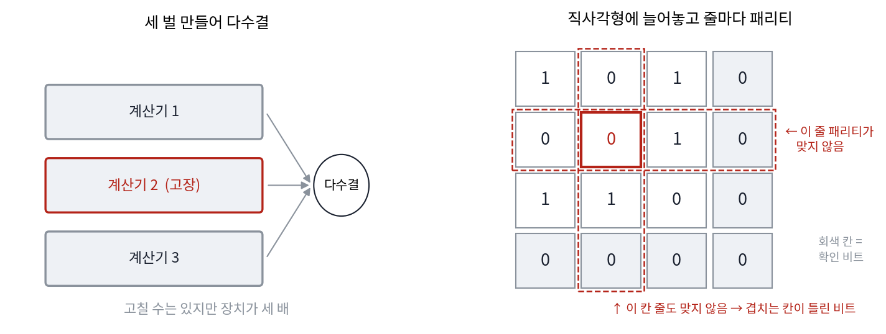
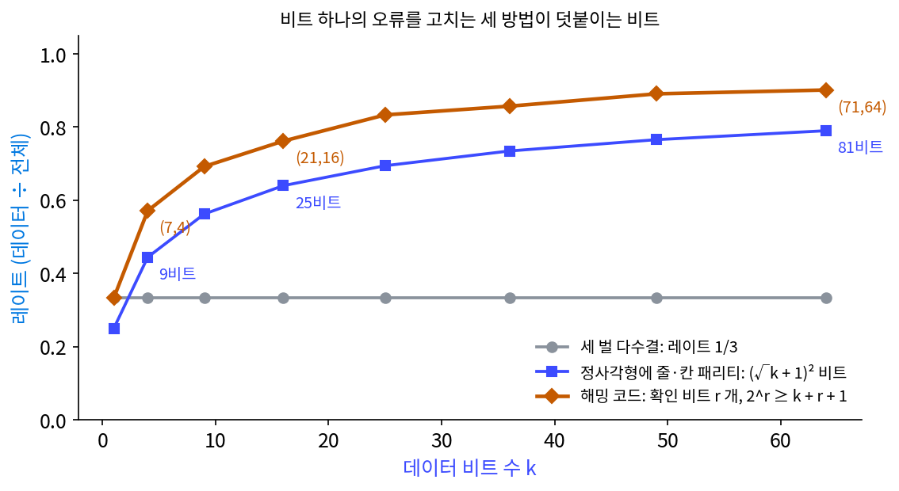
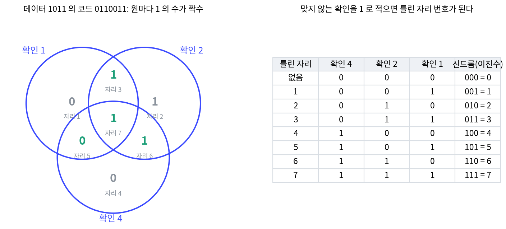
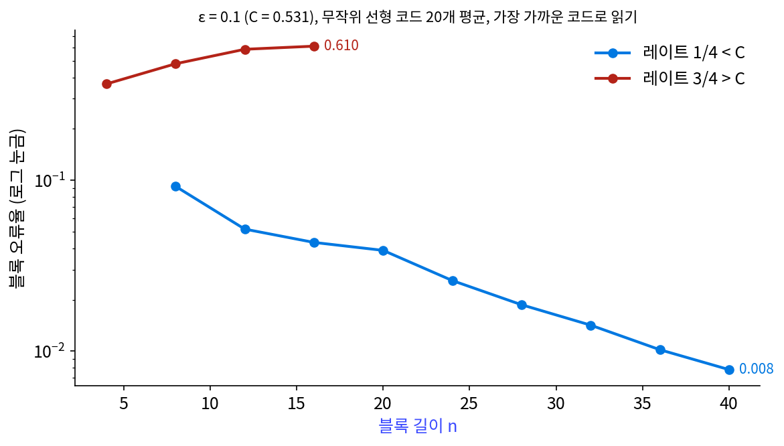
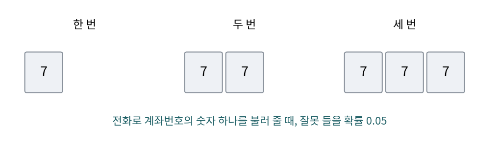
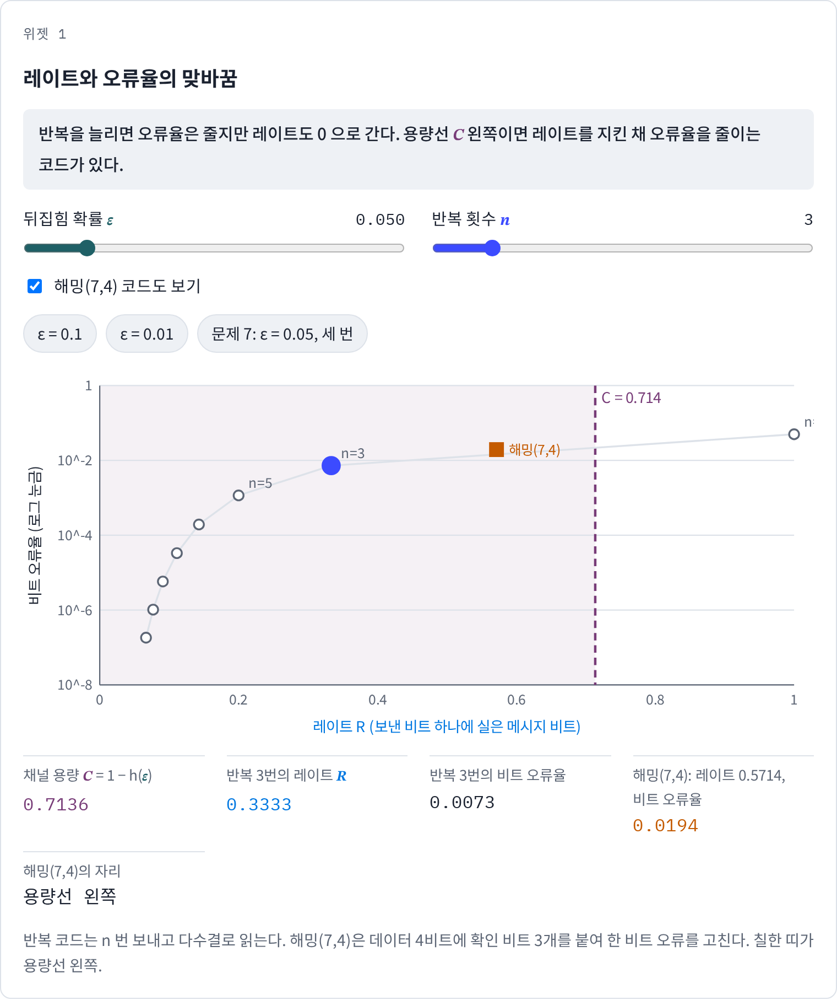
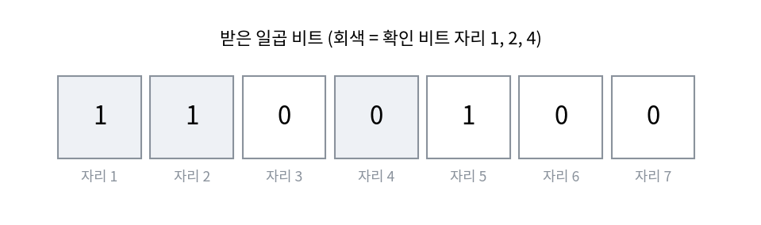
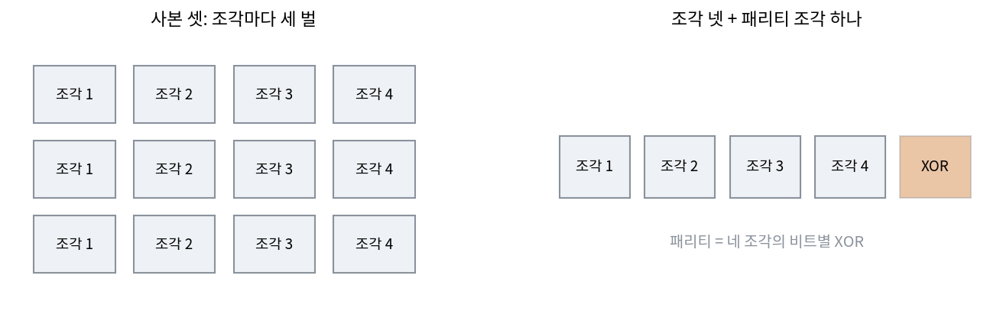

채널 코딩 정리: 용량 아래면 틀리지 않게 보낼 수 있다
채널 용량은 기호 하나에 평균으로 건너가는 정보의 한계였다. 그러나 압축한 파일이나 체크포인트에서 필요한 것은 평균이 아니라 「모든 비트가 맞게 도착하는 것」이다. 뒤집힘 확률이 0.1인 선에서 비트를 그대로 보내면 열에 하나가 틀린다. 같은 비트를 세 번 보내 다수결로 읽으면 틀리는 비율은 줄지만, 같은 시간에 보내는 정보는 3분의 1이 된다. 틀릴 확률을 0으로 보내려면 보내는 속도도 0으로 보내야 할까?
역사: 주말마다 멈춘 계산기
해밍(Richard Hamming)은 1946년 로스앨러모스를 떠나 벨 연구소 수학 그룹에 들어갔다. 그가 1990년대에 해군 대학원 강의를 편집한 『The Art of Doing Science and Engineering』(1997)에 남긴 회고에 따르면, 1946~1947년 무렵 그는 계전기로 만든 계산기 모델 V를 쓰고 있었다. 이 계산기는 십진 숫자 하나를 계전기 다섯 개 가운데 꼭 두 개만 켜는 「5개 중 2개」 코드로 적었기 때문에, 계전기 하나가 고장 나면 켜진 수가 둘이 아니게 되어 오류가 났다는 것은 알아챘다. 사람이 지켜보지 않을 때 오류를 만나면 그 단계를 세 번까지 다시 해 보고, 그래도 안 되면 그 문제를 버리고 다음 문제로 넘어갔다.
막내 연구원이던 해밍은 계산기를 금요일 오후 다섯 시부터 월요일 아침 여덟 시까지, 주말에만 쓸 수 있었다. 그는 입력 테이프에 문제를 잔뜩 실어 두고 동료들에게 화요일에 답을 주겠다고 약속했다. 그런데 어느 주말 계산기가 금요일 밤에 고장 나 월요일에 받은 답이 거의 없었고, 다음 주말에도 계산기가 또 멈췄다. 해밍은 회고에서 그때 「계산기가 오류가 있다는 것을 알아낼 수 있다면, 왜 오류가 난 비트를 찾아 반대로 바꿔 고치지 못하나」라고 화를 냈다고 적고, 실제 말은 그보다 거칠었다고 덧붙였다.
해밍이 처음 떠올린 것은 이미 알려진 방법으로, 계산기를 세 대 만들어 다수결을 하면 고칠 수는 있지만 장치가 세 배 든다. 그는 그보다 싸게 하려고 데이터 비트를 직사각형으로 늘어놓고 줄마다, 칸마다 패리티 비트(1의 개수가 짝수가 되게 붙이는 비트)를 달았다. 비트 하나가 틀리면 맞지 않는 줄 하나와 칸 하나가 생기고, 그 줄과 칸이 겹치는 자리가 틀린 비트다. 몇 주 뒤에는 회사 우편 차를 얻어 타고 가다 직사각형 대신 삼각형, 그다음 높은 차원의 정육면체로 덧붙이는 비트를 줄여 갔고, 결국 확인 비트들의 결과를 이진수로 읽으면 틀린 자리의 번호가 되는 코드에 닿았다.

해밍의 논문 「오류를 알아채고 고치는 코드(Error Detecting and Error Correcting Codes)」는 1950년 4월 『Bell System Technical Journal』에 실렸다. 해밍은 1982년의 짧은 회고에서, 일은 석 달쯤에 끝났지만 특허 때문에 발표가 두 해 넘게 묶였다고 적었다. 그 사이 섀넌은 1948년 논문의 17절에 「R. 해밍의 방법으로 찾은」 일곱 비트짜리 코드를 이미 소개했다. 일곱 비트 가운데 넷이 메시지이고 셋은 확인 비트이며, 받는 사람이 셋을 다시 계산해 이진수로 읽으면 틀린 비트의 번호가 나온다.


줄과 칸에 패리티를 달면 틀린 자리가 나온다는 건, 지금 보면 퍼즐 문제 하나 같은데요. 그게 왜 화가 나야 나오는 생각이었을까요?

그때 계산기는 오류를 알아채기만 하고 고치지는 않았어요. 「오류는 사람이 보고 고치는 것」이 당연했죠. 무엇이 그 당연함을 흔들었을까요?
주말에 지켜보는 사람이 없었던 거요. 사람이 있으면 다시 돌리면 되는데, 아무도 없으니까 계산기 스스로 고쳐야 했어요.
그리고 해밍 자신은 이진수에 익숙했다는 점을 꼽아요. 1947~1948년에는 이진법이 흔하지 않았는데, 신드롬을 이진수 하나로 읽어 자리 번호로 쓰는 생각이 거기서 나왔다고요.

계산기 세 대 다수결은 세 배, 직사각형은 그보다 덜 들고, 일곱 비트 코드는 확인 비트가 셋이네요. 그럼 덧붙이는 비율을 얼마까지 줄여도 고칠 수 있는지, 한계가 있는지가 궁금해져요.
반복 코드와 해밍(7,4) 코드
가장 쉬운 방법부터 계산해 보자. 비트 하나를 세 번 보내고 다수결로 읽는 반복 코드 (같은 비트를 여러 번 보내 다수결로 읽는 코드, repetition code)는 셋 가운데 둘 이상이 뒤집힐 때만 틀린다. ε = 0.1이면 3ε²(1 − ε) + ε³ = 0.027 + 0.001 = 0.028이다. 오류율은 0.1에서 0.028로 줄었지만, 보낸 비트 하나에 실은 메시지 비트는 1/3이다. 보낸 비트 수 n에 메시지 비트 k를 실을 때 R = k/n을 그 코드의 레이트라 한다.
다섯 번 반복하면 오류율 0.0086에 레이트 0.2, 일곱 번이면 0.0027에 0.143이다. 오류율을 줄이려고 반복을 늘릴수록 레이트도 0으로 간다. 해밍의 일곱 비트 코드는 데이터 4비트에 확인 비트 3개를 붙여 레이트가 4/7 = 0.571이다. 자리 1, 2, 4가 확인 비트이고, 자리 번호를 이진수로 적었을 때 1의 자리에 1이 있는 자리들(1, 3, 5, 7), 2의 자리에 1이 있는 자리들(2, 3, 6, 7), 4의 자리에 1이 있는 자리들(4, 5, 6, 7)마다 1의 개수가 짝수가 되게 확인 비트를 정한다.

받은 일곱 비트로 세 확인을 다시 계산해 깨진 확인을 1로 적으면 세 자리 이진수가 나오는데, 이것을 신드롬 (받은 비트로 다시 계산한 확인 결과, syndrome)이라 한다. 데이터 1011의 코드 0110011에서 자리 5가 뒤집혀 0110111이 왔다면, 자리 5가 든 확인 1과 확인 4가 깨지고 확인 2는 그대로라 신드롬은 101 = 5다. 자리 5를 되돌리면 데이터 1011이 나온다. 이렇게 데이터 4비트에 확인 3비트를 붙여 한 비트 오류를 고치는 코드를 해밍(7,4) 코드 (Hamming (7,4) code)라 한다.
ε = 0.01이면 해밍(7,4)는 일곱 비트 가운데 둘 이상이 뒤집힐 때만 블록이 틀려 블록 오류율 0.0020, 데이터 비트 오류율 0.00087이다. 반복 세 번(0.0003)보다 오류율은 조금 높지만 레이트가 0.333에서 0.571로 높다. 그런데 ε = 0.1에서는 데이터 비트 오류율이 0.067로 그냥 보내는 0.1에서 별로 줄지 않는다. 이때 레이트 0.571은 용량 0.531보다 크다.
반복 코드는 레이트–오류율 평면에서 왼쪽 아래로만 움직이는데, 섀넌의 1948년 논문이 놀라웠던 것은 레이트를 지킨 채 아래로만 내려갈 수 있다고 말한 데 있다. 레이트 R을 용량보다 작게 고정해 두고 블록 길이 n만 늘리면, 오류율을 원하는 만큼 0에 가깝게 하는 코드가 있다. 섀넌은 그런 코드를 직접 만들지 않았다. 코드책을 무작위로 뽑으면 평균 오류율이 0으로 간다는 것을 보였고, 평균이 0에 가까우면 그보다 나은 코드가 적어도 하나는 있다.
같은 생각을 작게 돌려 볼 수 있다. ε = 0.1인 채널에서 레이트를 1/4로 고정하고, 메시지 k비트마다 무작위 0·1 행렬로 n = 4k비트 코드를 만들어 받은 줄과 가장 가까운 코드로 읽는다. 블록 길이 8에서 0.092였던 블록 오류율이 40에서 0.0078로 계속 내려간다. 같은 레이트 1/4에서 네 번 반복으로 10비트를 보내면 10비트 가운데 하나라도 틀릴 확률이 0.247이다. 레이트를 용량보다 큰 3/4로 두면 블록이 길어질수록 오류율이 오히려 올라간다.

이 두 방향을 합친 것이 채널 코딩 정리 (용량 아래의 레이트면 오류율을 0에 가깝게 보낼 수 있다는 정리, noisy-channel coding theorem)다.
섀넌의 정리는 그런 코드가 「있다」고만 했다. 무작위 코드는 블록이 길어지면 코드책이 2^k줄로 커지고, 가장 가까운 코드를 찾는 데도 그만큼 시간이 든다. 용량에 가까우면서 빠르게 풀 수 있는 코드를 찾는 일은 그 뒤 반세기 동안 이어졌고, 오늘날 휴대폰과 와이파이는 용량에 꽤 가까이 가는 코드를 쓴다.
ML에서: 디코더는 가장 가까운 코드로 끌어당긴다
해밍(7,4)의 코드 16개는 7비트로 만들 수 있는 128개 줄 가운데 일부다. 코드마다 비트 하나만 다른 이웃이 7개 있어 16 × (1 + 7) = 128이므로, 7비트 줄은 모두 어느 한 코드의 「한 비트 안」에 든다. 디코딩은 받은 줄을 그 공간에서 가장 가까운 코드로 옮기는 일이다. 노이즈 낀 그림을 그럴듯한 그림들이 모인 얇은 판 쪽으로 되돌리는 디노이저와 같은 모양의 일이고, 그럴듯한 자료가 전체 공간의 작은 부분에 모여 있기 때문에 둘 다 가능하다.
오류 정정 코드는 ML 시스템의 기반에서도 돈다. 대규모 저장 시스템은 같은 자료를 세 벌 두는 대신, 조각 여러 개에 덧붙인 조각 몇 개를 두어 잃은 조각을 되살린다. 아파치 하둡의 HDFS 문서는 데이터 조각 6개에 패리티 조각 3개를 두는 리드–솔로몬 방식을 기본 정책으로 들고, 세 벌 복제의 추가 저장 200%가 50%로 준다고 적는다. 그 계산은 문제 9에서 한다.
문제 7. 계좌번호를 세 번 불러 주기
전화로 계좌번호를 불러 줄 때 숫자 하나를 잘못 들을 확률이 0.05다. (가) 숫자마다 한 번만 불러 주면 틀릴 확률은? (나) 두 번씩 불러 주면 무엇을 할 수 있고, 무엇은 못 하는가? (다) 세 번씩 불러 주고 다수결로 적으면, 틀릴 확률은 많아야 얼마인가?


(가)는 0.05요. (나)는 두 번 들은 숫자가 다르면 틀렸다는 걸 알 수 있어요. 다를 확률이 많아야 1 − 0.95² = 0.0975니까 열 번에 한 번쯤은 「다시 불러 줘」가 나오고요.
다르다는 걸 알았을 때 어느 숫자가 맞는지도 알 수 있나요?
아니요, 둘 가운데 어느 숫자가 맞는지는 몰라요. 알아채기만 하고 고치지는 못하니까, 해밍의 계산기처럼 다시 불러 달라고 하는 수밖에 없어요.
(다)는 셋 가운데 둘 이상을 잘못 들어야 틀리니까 3 × 0.05² × 0.95 + 0.05³ = 0.00725예요. 그런데 숫자는 0과 1이 아니라 열 가지잖아요. 둘을 잘못 들어도 서로 다른 숫자로 잘못 들으면 셋이 다 달라서 다수결이 안 되고, 그러면 틀린 걸 알아채요.
그래서 문제가 「많아야」라고 물었어요. 잘못 들은 두 숫자가 같을 때만 다수결이 틀린 숫자를 고르니까, 실제로 모르고 틀릴 확률은 0.00725보다 작아요.

두 번은 알아채기, 세 번은 고치기네요. 대신 통화가 세 배 길어지고요. 위젯에서 ε = 0.05, 세 번으로 놓으면 0.00725랑 레이트 1/3이 같이 나오겠네요.

문제 8. 일곱 비트에서 틀린 자리 찾기
해밍(7,4) 코드(자리 1, 2, 4가 확인 비트, 확인 1은 자리 1·3·5·7, 확인 2는 자리 2·3·6·7, 확인 4는 자리 4·5·6·7의 1의 개수를 짝수로 조정함)로 보낸 일곱 비트를 1100100으로 받았다. (가) 신드롬을 손으로 계산해 틀린 자리를 찾고 데이터 4비트(자리 3, 5, 6, 7)를 구하라. (나) 비트 두 개가 뒤집혔다면 어떻게 되는가? 보낸 코드가 1100110이었는데 자리 1과 3이 뒤집혔다고 하고 따라가 보라.

확인 1부터요. 자리 1, 3, 5, 7은 1, 0, 1, 0이라 합이 2, 짝수라서 0. 확인 2는 자리 2, 3, 6, 7이 1, 0, 0, 0이라 합 1, 홀수라서 1.
확인 4는 자리 4, 5, 6, 7이 0, 1, 0, 0이라 합 1, 홀수니까 1. 4·2·1 순서로 적으면 110 = 6이에요.
자리 6을 되돌리면 1100110이고, 데이터는 자리 3, 5, 6, 7이니까 0, 1, 1, 0, 곧 0110이에요.
(나)로 가 볼까요? 1100110에서 자리 1과 3을 뒤집으면요?
일단 받은 줄부터 적을게요. 0110110이요. 확인 1은 자리 1, 3, 5, 7이 0, 1, 1, 0이라 짝수, 확인 2는 자리 2, 3, 6, 7이 1, 1, 1, 0이라 홀수, 확인 4는 0, 1, 1, 0이라 짝수. 신드롬 010 = 2니까 자리 2가 틀렸어요. 두 개가 뒤집혔는데 하나만 걸렸으니, 적어도 자리 2는 고친 거죠?
자리 2를 고치면 0010110이고 데이터는 1110이야. 보낸 건 0110인데? 원래 틀린 건 자리 1과 3이었잖아.

아, 멀쩡한 자리 2를 망쳤네요. 틀린 비트가 셋이 됐어요. 신드롬이 0이 아니니까 「어딘가 틀렸다」까지는 맞았는데, 신드롬 2를 틀린 자리 번호로 믿은 게 잘못이었어요.
신드롬은 「비트 하나만 틀렸다」고 믿고 자리를 가리켜요. 두 개가 틀렸을 때 신드롬이 0이 아닌 건 맞지만, 신드롬을 자리 번호로 읽는 순간 틀린 고침이 돼요.
코드 16개 각각의 한 비트 이웃이 128줄을 다 채우니까, 두 비트 틀린 줄도 결국 어떤 코드의 한 비트 이웃이네요. 그 코드로 끌려가는 거고요. 두 비트 오류를 알아채려면 덧붙이는 비트가 하나 더 있어야겠어요.
문제 9. 체크포인트를 사본 셋 대신
학습 중인 모델의 체크포인트를 같은 크기의 조각 넷으로 나눠 디스크에 둔다. 디스크 하나가 망가질 확률은 0.01이고 서로 상관없다. 방법 A는 조각마다 사본 세 벌(디스크 12개), 방법 B는 조각 넷에 네 조각을 비트별로 XOR한 패리티 조각 하나(디스크 5개)를 둔다. (가) 두 방법의 저장량과 레이트를 구하라. (나) B는 어떤 경우에 되살리고, 되살리지 못할 확률은 얼마인가? (다) A가 되살리지 못할 확률은? 두 방법을 어떻게 고르겠는가?

(가)는 A가 원래 크기의 3배라 레이트 1/3, B는 5/4배라 레이트 4/5예요.
(나)에서 디스크 하나가 꺼지면 B는 어떻게 되살리죠?
음, 조각 하나가 빠졌다고 해 볼게요. 남은 넷을 비트별로 XOR하면 돼요. 조각 1~4와 그 XOR을 다 더하면 0이니까, 하나가 없으면 나머지 넷의 XOR이 그 조각이에요. 어느 디스크가 꺼졌는지는 알고 있으니까, 망가진 자리를 알려 주는 지워짐 채널이고요.
그럼 B는 둘 이상 꺼지면 못 되살려요. 다섯 개 가운데 둘 이상 꺼질 확률은 1 − (0.99⁵ + 5 × 0.01 × 0.99⁴)인데, 돌려 보니 0.00098이에요.
(다)는요?
A는 어떤 조각의 세 벌이 다 꺼질 때만 잃어요. 한 조각이 0.01³ = 10^(−6)이고 조각이 넷이니까 4 × 10^(−6)이요. B보다 250배쯤 안전하지만 저장은 세 배예요.

그럼 덧붙이는 조각을 늘려서 아무 조각이나 셋까지 잃어도 되게 하면, 저장은 덜 들면서 A만큼 안전할 수 있지 않을까요?
HDFS 문서가 기본으로 드는 데이터 조각 6개 + 패리티 조각 3개가 그 설계예요. 아홉 개 가운데 아무 셋이 꺼져도 되살리고, 저장은 1.5배예요. 같은 확률 0.01로 넷 이상 꺼질 확률을 내면 1.2 × 10^(−6)이라 세 벌보다 오히려 낮아요. 반복은 가장 쉬운 코드일 뿐이고, 덜 덧붙이고 더 고치는 코드가 있다는 게 이 절의 결론이에요.